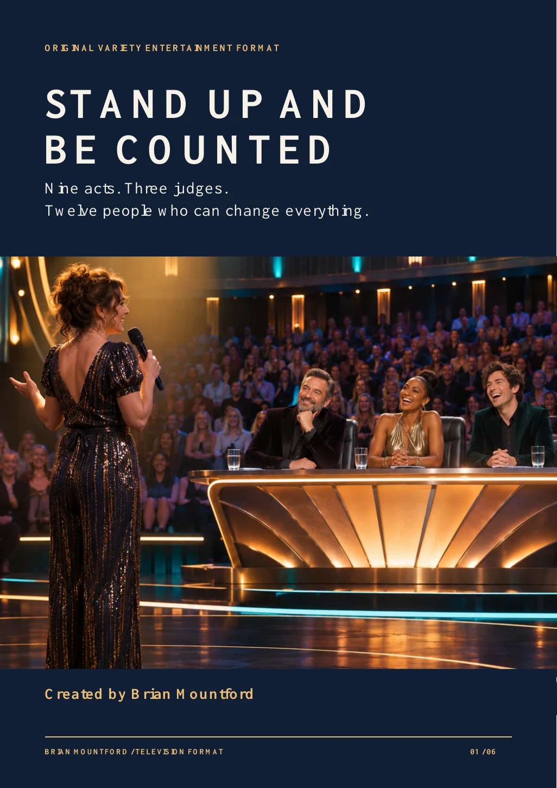
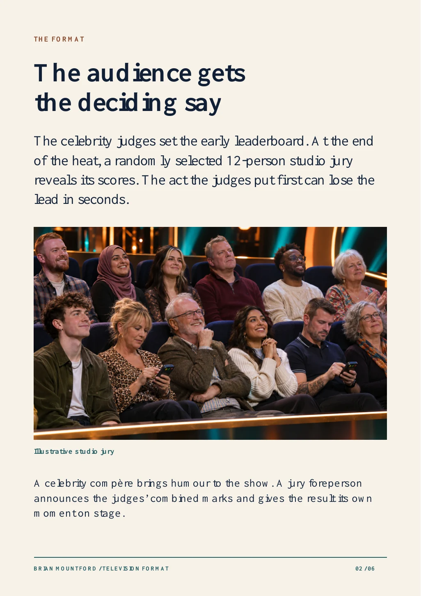
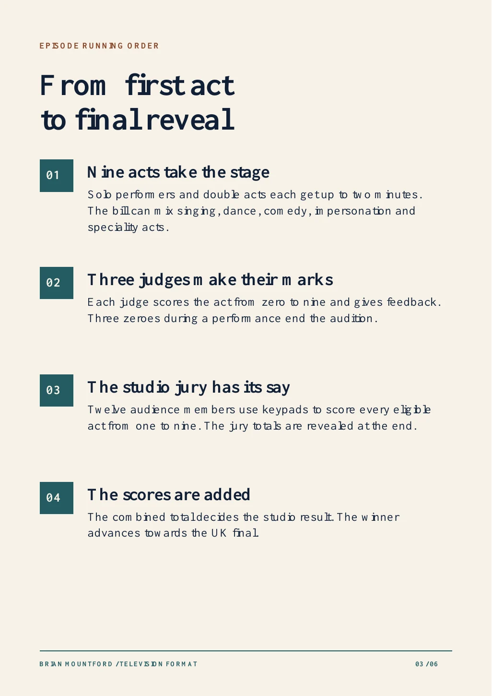
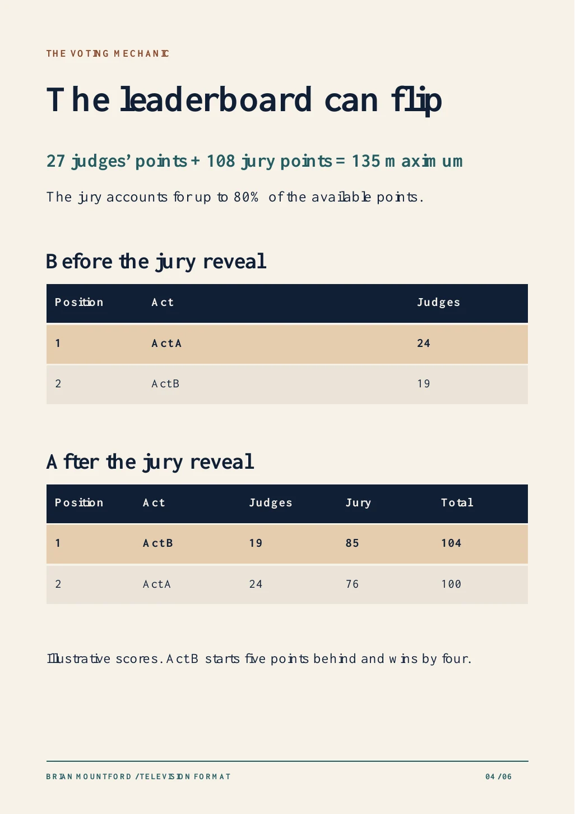
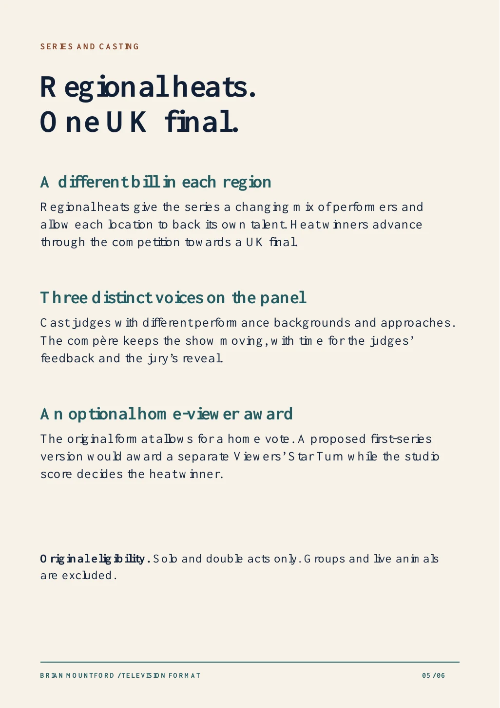
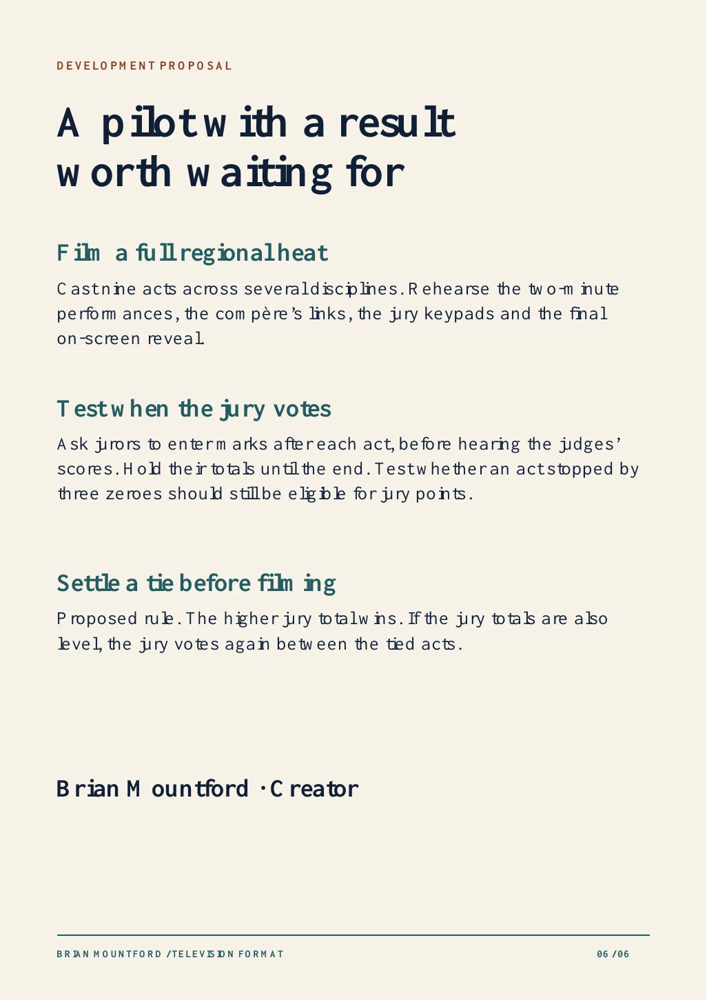

ORIGINAL VARIETY ENTERTAINMENT FORMAT STAND UP AND BE COUNTED Nine acts. Three judges. Twelve people who can change everything. Created by Brian Mountford BRIAN MOUNTFORD / TELEVISION FORMAT 01 / 06

THE FORMAT The audience gets the deciding say The celebrity judges set the early leaderboard. At the end of the heat, a randomly selected 12-person studio jury reveals its scores. The act the judges put first can lose the lead in seconds. Illustrative studio jury A celebrity compère brings humour to the show. A jury foreperson announces the judges’ combined marks and gives the result its own moment on stage. BRIAN MOUNTFORD / TELEVISION FORMAT 02 / 06

EPISODE RUNNING ORDER From first act to final reveal 01 Nine acts take the stage Solo performers and double acts each get up to two minutes. The bill can mix singing, dance, comedy, impersonation and speciality acts. 02 Three judges make their marks Each judge scores the act from zero to nine and gives feedback. Three zeroes during a performance end the audition. 03 The studio jury has its say Twelve audience members use keypads to score every eligible act from one to nine. The jury totals are revealed at the end. 04 The scores are added The combined total decides the studio result. The winner advances towards the UK final. BRIAN MOUNTFORD / TELEVISION FORMAT 03 / 06

THE VOTING MECHANIC The leaderboard can flip 27 judges’ points + 108 jury points = 135 maximum The jury accounts for up to 80% of the available points. Before the jury reveal Position Act Judges 1 Act A 24 2 Act B 19 After the jury reveal Position Act Judges Jury Total 1 Act B 19 85 104 2 Act A 24 76 100 Illustrative scores. Act B starts five points behind and wins by four. BRIAN MOUNTFORD / TELEVISION FORMAT 04 / 06

SERIES AND CASTING Regional heats. One UK final. A different bill in each region Regional heats give the series a changing mix of performers and allow each location to back its own talent. Heat winners advance through the competition towards a UK final. Three distinct voices on the panel Cast judges with different performance backgrounds and approaches. The compère keeps the show moving, with time for the judges’ feedback and the jury’s reveal. An optional home-viewer award The original format allows for a home vote. A proposed first-series version would award a separate Viewers’ Star Turn while the studio score decides the heat winner. Original eligibility. Solo and double acts only. Groups and live animals are excluded. BRIAN MOUNTFORD / TELEVISION FORMAT 05 / 06

DEVELOPMENT PROPOSAL A pilot with a result worth waiting for Film a full regional heat Cast nine acts across several disciplines. Rehearse the two-minute performances, the compère’s links, the jury keypads and the final on-screen reveal. Test when the jury votes Ask jurors to enter marks after each act, before hearing the judges’ scores. Hold their totals until the end. Test whether an act stopped by three zeroes should still be eligible for jury points. Settle a tie before filming Proposed rule. The higher jury total wins. If the jury totals are also level, the jury votes again between the tied acts. Brian Mountford · Creator BRIAN MOUNTFORD / TELEVISION FORMAT 06 / 06